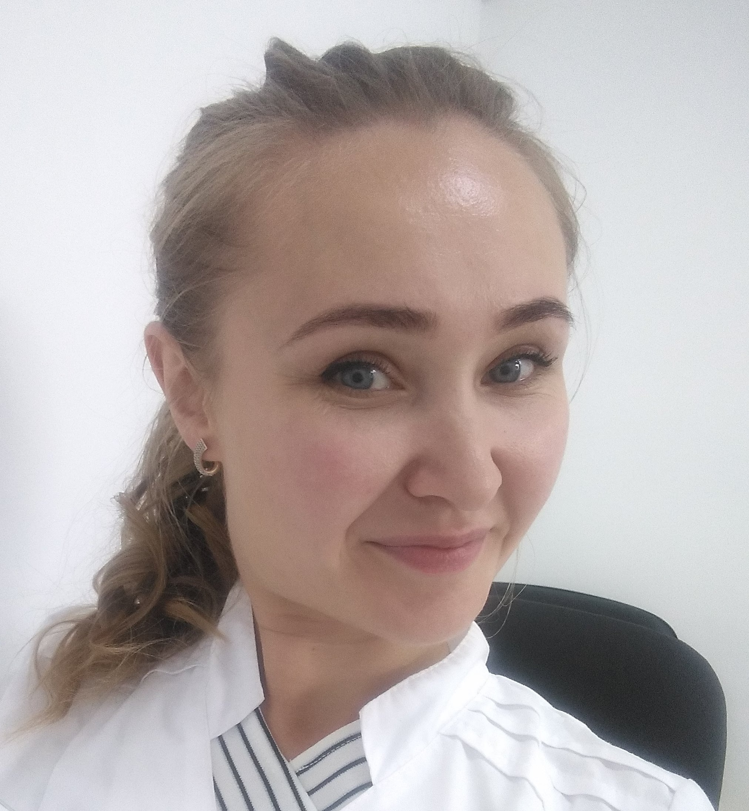

Summary
Sviridova Ekaterina, 31, Izhevsk
e-mail: ekat.swiridowa2017@gmail.com phone:8(982)116-18-93
Education:
PGFA, 2010, Perm
Courses: Yandex Workshop, web development direction, 2019.
Courses: Yandex Workshop, web development direction, 2019.Professional skills:
- Strong knowledge of HTML5, CSS3. Understanding the principles of semantics.
- Cross-browser development experience. Rubber and adaptive layout.
- Understanding of modern principles and development methodologies.
- Possession of BEM methodology.
- CSS preprocessing skills (Less, Sass)
- Experience with Git and GitHub version control system
- Webpack
- JavaScript:
- knowledge of the basics of OOP
- basic syntax knowledge
- algorithmic thinking and knowledge of classical algorithms
- Experience with frameworks (React, Angular)
About me:
About a year ago, I decided to discover the world of web development. And I realized that it fascinates me extraordinarily. I have completed development courses and now I want to hone my knowledge in practice and gain a lot of experience in interesting projects.
Expectations from work:
I want to start my career as a Junior developer and in 3 years grow to Senior. I need a complete immersion in the world of development. I hope to solve interesting problems with the same enthusiastic colleagues under the guidance of experienced mentors. I hope for external and internal training, the opportunity to attend professional conferences.
English technical:
Knowledge of English in the amount of reading and understanding of technical documentation.